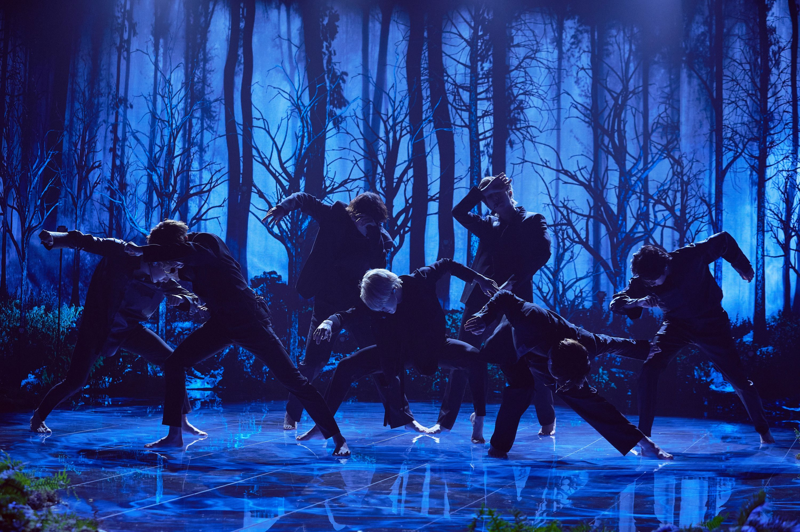
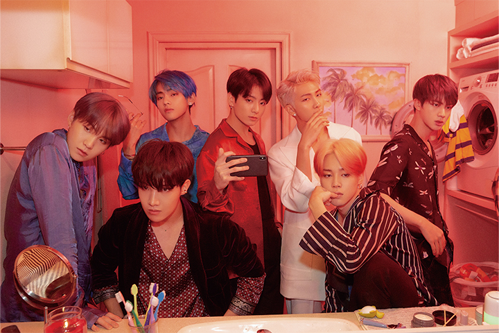
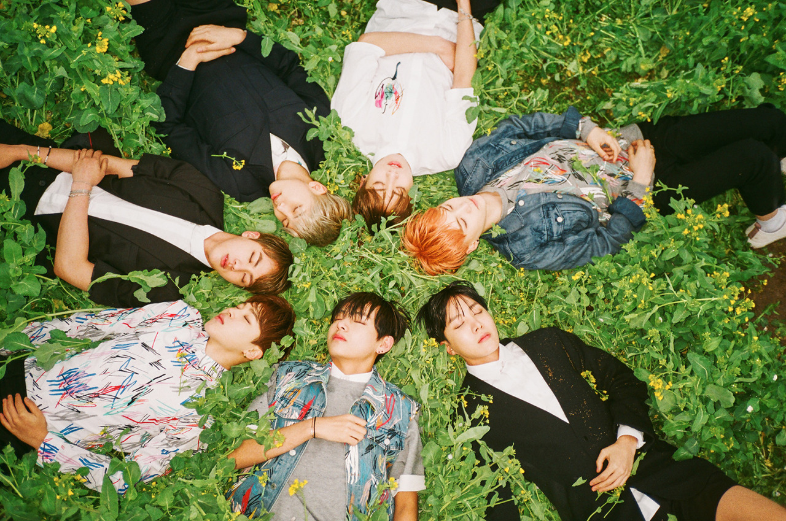

I always struggle to answer the question of what my favorite BTS song is. Given their lengthy and very diverse discography, I have compiled a list of 5 of my favorite songs.
The list is ever changing but here are the songs in no particular order.
Black Swan

Black Swan, released in 2020 as part of the group's MOTS7 album,
is an R&B ballad. The song's introspective lyrics that deal with
an artist's fear of loss of passion resonated with many people,
making this not only critically acclaimed but a fan favorite too.
Home

Home is a pop/R&B song in BTS' MOTS:Persona album. The track, despite
not being released as a single, is a standout song on the album. The
lyrics focus on the emptiness of the luxuries of life without anyone
to share them with.
Fly To My Room
A sub-unit song off of the 2020 album BE, Fly To My Room is a neo-soul, pop
song sung by V and Jimin along with rappers SUGA and J-Hope. The song which
came out during the peak of COVID-19 aludes to the monotony of life in quarantine
and lamenting the loss of emotion in the pandemic. The juxtaposition of the lyrics
with the upbeat tempo is what makes it one of group's most unique songs.
Pied Piper
BTS' lyricism is often looked over and the carefully crafted Pied Piper is proof
of the band's witty lyricality. Released in 2017, the song is a commentary on
BTS' large fanbase ARMY. The self-aware song hints at fan culture and how often
fans put their love for their favorite artists above everything else. BTS share
a very strong relationship with ARMY. Hence, this song very carefully strays from
being condescending but is rather a message written with a lot more affection.
Butterfly

Throughout BTS' career, the group has never shied away from talking about the difficulties
in life, from depression to burn out to losing someone, they've adressed many uncomfortable
feelings in many of their songs. Butterfly, released in 2015, is one of the group's best songs.
The lyrical complexity of the song along with the vocals and rap verses adds to the pain and emotion
the song conveys about the fear of losing someone.